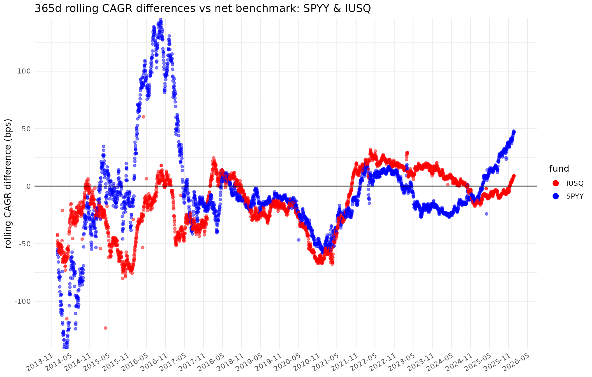
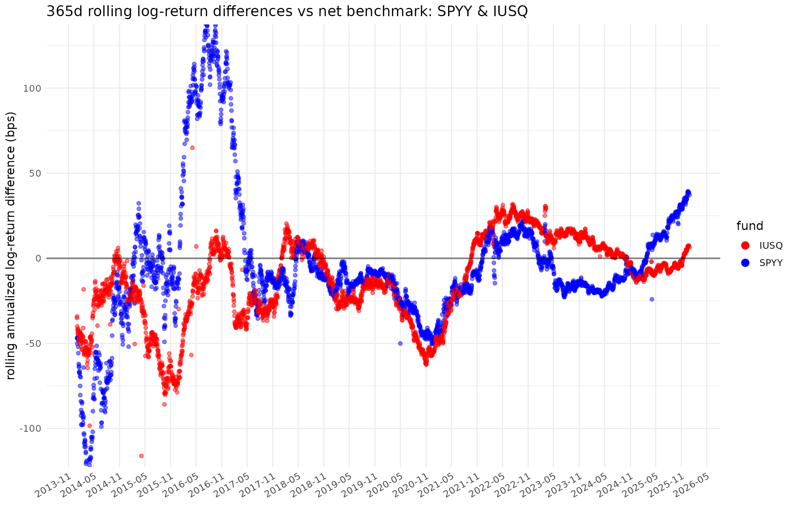
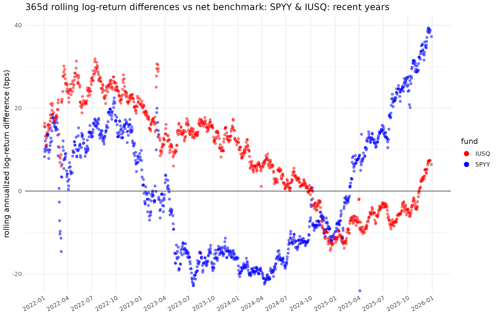
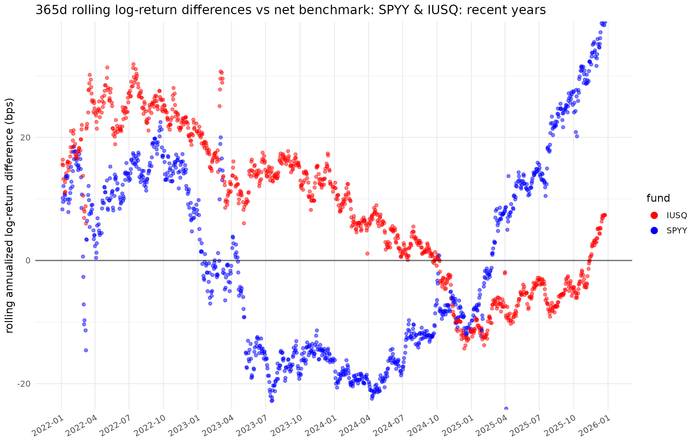

fundsr-intro: Rolling differences and Xetra liquidity plots
Stanislav Traykov
2025-12-30
Source:vignettes/fundsr-intro.Rmd
fundsr-intro.RmdSetup
library(dplyr)
#>
#> Attaching package: 'dplyr'
#> The following objects are masked from 'package:stats':
#>
#> filter, lag
#> The following objects are masked from 'package:base':
#>
#> intersect, setdiff, setequal, union
library(ggplot2)
library(lubridate)
#>
#> Attaching package: 'lubridate'
#> The following objects are masked from 'package:base':
#>
#> date, intersect, setdiff, union
library(fundsr)
#> fundsr loaded.Set up directories.
dirs <- c(
data = file.path("data", "funds"),
xlm = file.path("data", "xlm"),
out = "output"
)
for (d in dirs) {
dir.create(d, recursive = TRUE)
}Populate the XLM directory with some monthly XLM reports
xlm_urls <- c(
"https://www.cashmarket.deutsche-boerse.com/resource/blob/4844258/91ce589f5309cbbd1ad0c92b3e6cdbda/data/20251130-ETF-ETP-Statistic.xlsx",
"https://www.cashmarket.deutsche-boerse.com/resource/blob/4795286/394c4451af562507f9def3f39da62242/data/20251031-ETF-ETP-Statistic.xlsx",
"https://www.cashmarket.deutsche-boerse.com/resource/blob/4725636/2d62a1677b537d996aefc45df3ff21d3/data/20250930-ETF-ETP-Statistic.xlsx",
"https://www.cashmarket.deutsche-boerse.com/resource/blob/4674370/0de847380722e8e87bc821cb5313ba41/data/20250831-ETF-ETP-Statistic.xlsx"
)
for (url in xlm_urls) {
fname <- basename(url)
dest_path <- file.path(dirs[["xlm"]], fname)
if (!file.exists(dest_path)) {
download.file(url, destfile = dest_path, mode = "wb", quiet = TRUE)
Sys.sleep(stats::runif(1, 0.5, 1.0))
}
}Import all XLM files into a tibble
if (!exists("xlm_data")) {
xlm_data <- read_xlm_directory(dirs[["xlm"]])
}
#> XLM read: August 2025
#> XLM read: September 2025
#> XLM read: October 2025
#> XLM read: November 2025Set package options
fundsr_options(
data_dir = dirs[["data"]],
out_dir = dirs[["out"]],
# internal_png = TRUE, # output PNGs without Inkscape (lower quality)
# Inkscape executable for higher-quality PNG export
# (uncomment depending on system or comment all to disable)
inkscape = "C:/Program Files/Inkscape/bin/inkscape.exe",
# inkscape = "/Applications/Inkscape.app/Contents/MacOS/Inkscape",
# inkscape = "/usr/bin/inkscape",
# inkscape = Sys.which("inkscape"), # if it's on PATH (usually not on Win/Mac)
)
# Helper to add urls to option fundsr.fund_urls
add_fund_urls(c(
IUSQ = "https://www.ishares.com/uk/individual/en/products/251850/ishares-msci-acwi-ucits-etf/1535604580409.ajax?fileType=xls&fileName=iShares-MSCI-ACWI-UCITS-ETF-USD-Acc_fund&dataType=fund",
SPYY = "https://www.ssga.com/ie/en_gb/institutional/library-content/products/fund-data/etfs/emea/navhist-emea-en-spyy-gy.xlsx"
))Get fund data
Populate funds directory (download files in
fundsr.fund_urls option)
download_fund_data()
#> Downloading 'IUSQ'
#> Downloading 'SPYY'Register data loader
add_data_loader(function() {
spdr("SPYY", benchmark = "ACWI") # automatically attempts to read <ticker>.xls[x]
ishs("IUSQ", benchmark = "ACWI", retrieve_benchmark = T) # also retrieve ACWI from file
})Get fund data into tibbles in a storage environment
storage <- run_data_loaders() # call registered data loaders
#> *** Loading: spyy
#> Attempting readxl on 'data/funds/SPYY.xlsx'...
#> readxl succeeded. Returning data.
#> Returning 3726 rows x 2 columns from 'data/funds/SPYY.xlsx' (sheet='1', date_field='^Date').
#> *** Loading: iusq
#> Attempting readxl on 'data/funds/IUSQ.xls'...
#> readxl failed. Attempting parse as Excel 2003 XML...
#> Returning 3620 rows x 3 columns from 'data/funds/IUSQ.xls' (sheet='Historical', date_field='^As Of').Join the environment into a big tibble, cut off & sort
series <- join_env(storage, by = "date") %>%
filter(date >= as_date("2012-12-29")) %>%
arrange(date)
#> Joining: spyy, iusqCheck contents
storage[["iusq"]]
#> # A tibble: 3,620 × 3
#> date iusq ACWI
#> <date> <dbl> <dbl>
#> 1 2025-12-29 109. NA
#> 2 2025-12-24 109. 440.
#> 3 2025-12-23 109. 439.
#> 4 2025-12-22 109. 437.
#> 5 2025-12-19 108. 434.
#> 6 2025-12-18 107. 431.
#> 7 2025-12-17 106. 428.
#> 8 2025-12-16 107. 432.
#> 9 2025-12-15 108. 434.
#> 10 2025-12-12 108. 434.
#> # ℹ 3,610 more rows
series
#> # A tibble: 3,341 × 4
#> date spyy iusq ACWI
#> <date> <dbl> <dbl> <dbl>
#> 1 2012-12-31 76.7 29.2 115.
#> 2 2013-01-01 NA 29.2 115.
#> 3 2013-01-02 78.4 29.8 118.
#> 4 2013-01-03 78.3 29.8 118.
#> 5 2013-01-04 78.5 29.9 118.
#> 6 2013-01-07 78.3 29.8 118.
#> 7 2013-01-08 77.9 29.7 117.
#> 8 2013-01-09 78.2 29.8 118.
#> 9 2013-01-10 78.8 30.1 119.
#> 10 2013-01-11 79.0 30.1 119.
#> # ℹ 3,331 more rows
get_fund_index_map()
#> spyy iusq
#> "ACWI" "ACWI"Calculate CAGR & log diffs
nd <- 365
diffs <- purrr::map(
list(cagr = FALSE, log = TRUE),
~ roll_diffs(series, nd, get_fund_index_map(), use_log = .x)
)
#> Roll CAGR for spyy tracking ACWI
#> Roll CAGR for iusq tracking ACWI
#> Roll log-ret for spyy tracking ACWI
#> Roll log-ret for iusq tracking ACWIPlot specs
no_filter <- NULL
zoom_filter <- function(x) {x %>% filter(date >= as_date("2022-01-01"))}
acwi_funds <- c("spyy", "iusq")
gg_par <- scale_color_manual(values = c("iusq" = "red", "spyy" = "blue"), labels = toupper)
plot_spec <- tribble(
~plot_id, ~title, ~data_filter,
~gg_params, ~width, ~height,
~funds,
"ACWI", "SPYY & IUSQ", no_filter,
gg_par, 14, 9,
acwi_funds,
"ACWIz",
c(en = "SPYY & IUSQ: recent years",
bg = "SPYY & IUSQ: последни години"),
zoom_filter,
gg_par, 14, 9,
acwi_funds
)Run!
Run the plots! This outputs SVG files and queues plots for optional
PNG export using Inkscape (see blow). It may also output lower-quality
PNGs (if option fundsr.internal_png is
TRUE).
p <- run_plots(diffs$cagr, diffs$log, nd, plot_spec, xlm_data)
#> plot_roll_diffs: 365d rolling CAGR differences vs net benchmark: SPYY & IUSQ
#> plot_xlms: spyy, iusq
#> plot_roll_diffs: 365d rolling log-return differences vs net benchmark: SPYY & IUSQ
#> plot_roll_diffs: 365d rolling CAGR differences vs net benchmark: SPYY & IUSQ: recent years
#> plot_roll_diffs: 365d rolling log-return differences vs net benchmark: SPYY & IUSQ: recent yearsOutput
p[["ACWI"]]
p[["ACWI_L"]]
p[["ACWIz_L"]]
p[["xlm_ACWI"]]
Corresponding SVG files should be in the output
directory.
Plot in another language
Sys.setlocale("LC_MESSAGES", "bg_BG.UTF-8")
#> [1] "bg_BG.UTF-8"
plot_spec <- plot_spec %>%
mutate(plot_id = paste0(plot_id, "_bg"))
bg_p <- run_plots(diffs$cagr, diffs$log, nd, plot_spec, xlm_data)
#> plot_roll_diffs: 365d rolling CAGR differences vs net benchmark: SPYY & IUSQ
#> plot_xlms: spyy, iusq
#> plot_roll_diffs: 365d rolling log-return differences vs net benchmark: SPYY & IUSQ
#> plot_roll_diffs: 365d rolling CAGR differences vs net benchmark: SPYY & IUSQ: recent years
#> plot_roll_diffs: 365d rolling log-return differences vs net benchmark: SPYY & IUSQ: recent years
bg_p[["ACWIz_bg_L"]]
Optional: higher-quality PNG export
export_pngs()
#> Executing "C:/Program Files/Inkscape/bin/inkscape.exe" --actions="export-background:white;file-open:output/ACWI.svg;export-filename:output/ACWI.png;export-width:1300;export-do;file-close;file-open:output/xlm_ACWI.svg;export-filename:output/xlm_ACWI.png;export-width:1300;export-do;file-close;file-open:output/ACWI_L.svg;export-filename:output/ACWI_L.png;export-width:1300;export-do;file-close;file-open:output/ACWIz.svg;export-filename:output/ACWIz.png;export-width:1300;export-do;file-close;file-open:output/ACWIz_L.svg;export-filename:output/ACWIz_L.png;export-width:1300;export-do;file-close;file-open:output/ACWI_bg.svg;export-filename:output/ACWI_bg.png;export-width:1300;export-do;file-close;file-open:output/xlm_ACWI_bg.svg;export-filename:output/xlm_ACWI_bg.png;export-width:1300;export-do;file-close;file-open:output/ACWI_bg_L.svg;export-filename:output/ACWI_bg_L.png;export-width:1300;export-do;file-close;file-open:output/ACWIz_bg.svg;export-filename:output/ACWIz_bg.png;export-width:1300;export-do;file-close;file-open:output/ACWIz_bg_L.svg;export-filename:output/ACWIz_bg_L.png;export-width:1300;export-do;file-close"
#> [1] 0